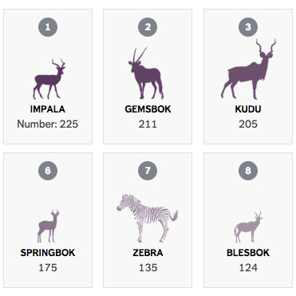
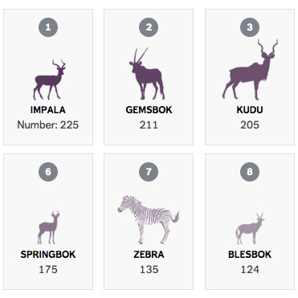
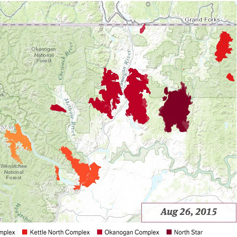
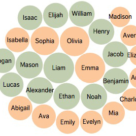
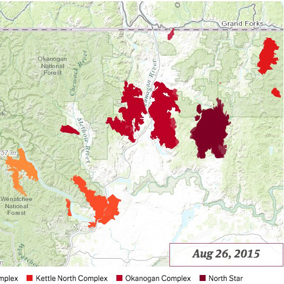
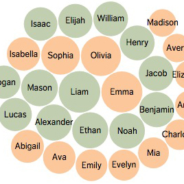
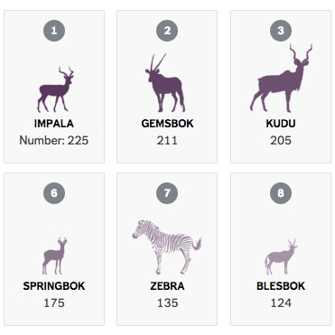
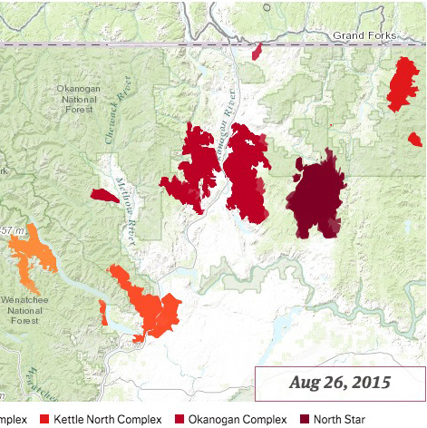
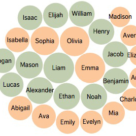

 





Several lifetimes ago, Audrey left medical school and stumbled into journalism. Since then, she has reported for NPR and Alaska Public Media, and is now cutting her teeth on data and interactives at The Seattle Times.
Colleagues have described Audrey as "a little bit crazy" and "not entirely hopeless."
She is currently based in Seattle and hopes to one day live in a very small house with a very large bathtub.


